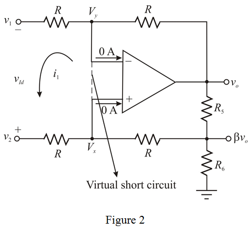

Apply Kirchhoff’s current law at non-inverting node,  .
.
The inverting voltage, due to virtual ground concept is,
Refer to Figure P2.69 in the textbook.
The inverting and non-inverting terminal currents are zero in an ideal op-amp. Draw the circuit with the node voltages and currents.
Apply Kirchhoff’s current law at non-inverting node, .
The inverting voltage, due to virtual ground concept is,
Apply Kirchhoff’s current law at inverting node,  .
.
Substitute the expression for  in the equation.
in the equation.
The differential voltage gain is,
Therefore, the differential gain,  is, .
is, .
Consider the following circuit to determine the resistor values.

Therefore, the differential input resistance, is,
Substitute for  in the equation.
in the equation.
Therefore, the value of resistance, R is,  .
.
Recall the expression for the differential gain.
Substitute 10 V/V for  in the equation.
in the equation.
Consider the following due to voltage division method applied at resistance,  .
.
Substitute 0.9 for  in the equation.
in the equation.
Consider the following condition to find the resistor values:
Substitute  for
for  , and the expression for
, and the expression for  .
.
Substitute  for in the equation for
for in the equation for  .
.
Therefore, the values of the resistors in the design of the circuit are,
.